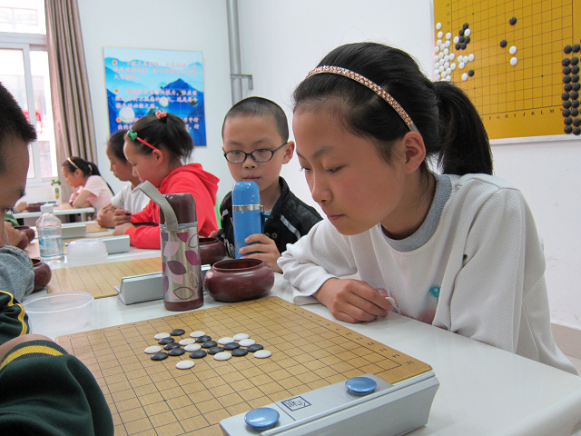
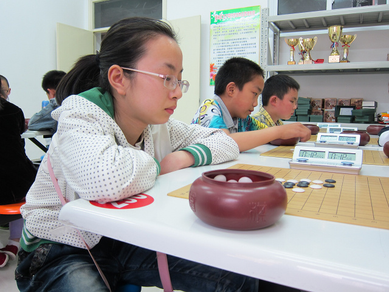
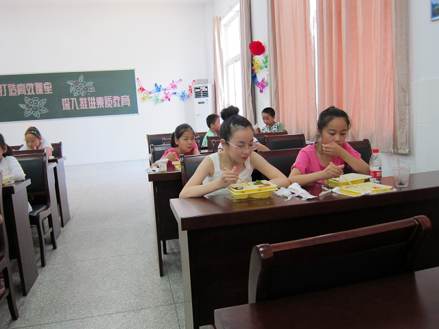
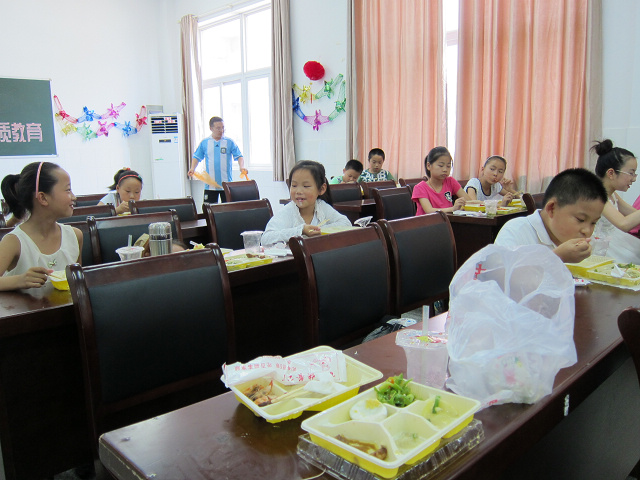

2012全少赛回忆录之一前期准备
首页
少儿五子棋
#1 2012全少赛回忆录之一前期准备 作者：黄药师 发表时间：2012-7-24 14:08:14
2012年全少赛已经结束，带着29个孩子，41个人的队伍外面呆了整整7天时间。在家里休整了2天，现在整理一下这几天的经历，放出来与大家共享。本来准备在比赛间隙写的，但是实在是抽不出时间，后面会提到为什么没有时间，哎，这次参加的人也忒多了。
2011年全少赛，我们是从当年5月份开始准备，这次我们更早，2011年全少赛结束之后，我们就开始着手准备了。之所以这么早启动，源于我们发现我们的后备力量实在是太匮乏了。整个2011年下半年，就是培养新人，但是这个阶段的新手完全下不过老队员。到2012年上半年，我们有意识的让新手增加一些实战机会，包括前往上海进行交流赛、区比赛，市智力运动会，前往宁波参加比赛。有了实战经验，新手已经从开始的完全处于下风，到后来能与老队员一争高下了。平时由于还要正常的上课学习，所有队员只能在学校自己练习。好容易到放暑假，留给我们集训的时间也就是10天，10天时间我们需要做的事情很多，首先就是确定参赛名单。经过教练组的讨论，决定除邓伟同学以外，其他的已经上中学的老队员都不召回，其他少年组选手全部由正在上小学的选手跨组比赛。因此最后29人参加全国的名单中，只有7个老队员，而且除去陆梦溪去年得了儿女冠军外，其他均没有进入前3，这是一支几乎全新的队伍。在暑假的集训中，我们还邀请了一些老队员和参赛选手一起练习，让他们适应全国赛的氛围，水平。不少新队员从逼平甚至战胜老队员上获得了信心。

集训每天中饭就是快餐

 ［ 掌棋如烟 于 2012-7-24 21:22:26 时花20金币送鲜花一朵］
［ 掌棋如烟 于 2012-7-24 21:22:26 时花20金币送鲜花一朵］
［ 掌棋如烟 于 2012-7-24 21:22:26 时花20金币送鲜花一朵］
［ 掌棋如烟 于 2012-7-24 21:22:26 时花20金币送鲜花一朵］
［ 掌棋如烟 于 2012-7-24 21:22:26 时花20金币送鲜花一朵］
［ 小红眼镜 于 2012-7-25 0:08:00 时花20金币送鲜花一朵］
［ 米兰 于 2012-7-25 2:06:43 时花20金币送鲜花一朵］
［ 米兰 于 2012-7-25 2:06:43 时花20金币送鲜花一朵］
［ 米兰 于 2012-7-25 2:06:43 时花20金币送鲜花一朵］
#2 Re:2012全少赛回忆录之一前期准备 作者：黄药师 发表时间：2012-7-24 14:09:18
上图有个穿阿根廷足球服的就是我了，正在整理垃圾呢。
#3 Re:2012全少赛回忆录之一前期准备 作者：小丸.net 发表时间：2012-7-24 14:34:11
除了欺负小人，你会点别的不。。。。
#4 Re:小丸.net【==Re:2012全少赛回忆录之一前期准备==】 作者：黄药师 发表时间：2012-7-24 14:35:12
引用：
原文由 小丸.net 发表于 2012-7-24 14:34:11 :
除了欺负小人，你会点别的不。。。。
就好这一口
#5 Re:2012全少赛回忆录之一前期准备 作者：山东星月皎璨 发表时间：2012-7-24 16:24:48
跨组比赛呀，了不得。你们女子少年组都是跨组比赛的吗
#6 Re:2012全少赛回忆录之一前期准备 作者：掌棋如烟 发表时间：2012-7-24 21:21:57
看到第一张,呀,水杯不错,
第二张,桌台不错,
第三张,窗帘不错,
第四张,饭盒不错,这谁呀,吃饭这么挑,光把蛋黄给抠了
#7 Re:山东星月皎璨【==Re:2012全少赛回忆录之一前期准备==】 作者：黄药师 发表时间：2012-7-24 21:41:52
引用：
原文由 山东星月皎璨 发表于 2012-7-24 16:24:48 :
跨组比赛呀，了不得。你们女子少年组都是跨组比赛的吗
整个少年组7人除去邓伟和顾铃，其他均为跨组。
已经上中学的学生很难再出来下棋。
顺便爆料一下：纪香同学已经正式录取定向师范生，5年后将成为一名小学人民老师。
#8 Re:2012全少赛回忆录之一前期准备 作者：三爱思 发表时间：2012-7-25 6:25:50
学五子棋的环境真不错，赞一个
#9 Re:黄药师【==Re:山东星月皎璨【==Re:2012全少赛回忆录之一前期准备==】==】 作者：梧桐风 发表时间：2012-7-25 9:05:42
那个啥？纪香也刚高考完？还是高二？敢情都这么大了啊。。。
#10 Re:2012全少赛回忆录之一前期准备 作者：有志青年 发表时间：2012-7-25 10:28:57
纪香初三毕业，已经录取为南通师范定向生，五年制大专，出来后就有工作。
#11 Re:2012全少赛回忆录之一前期准备 作者：黄药师 发表时间：2012-7-25 11:21:13
另外10年全少赛少年女子组冠军许姝怡同学也是上定向师范生，已经一年了，4年后将成为一名幼儿教师
#12 Re:2012全少赛回忆录之一前期准备 作者：山东星月皎璨 发表时间：2012-7-25 17:16:50
爱网的这个加为好友有什么用，我不知道，问一下